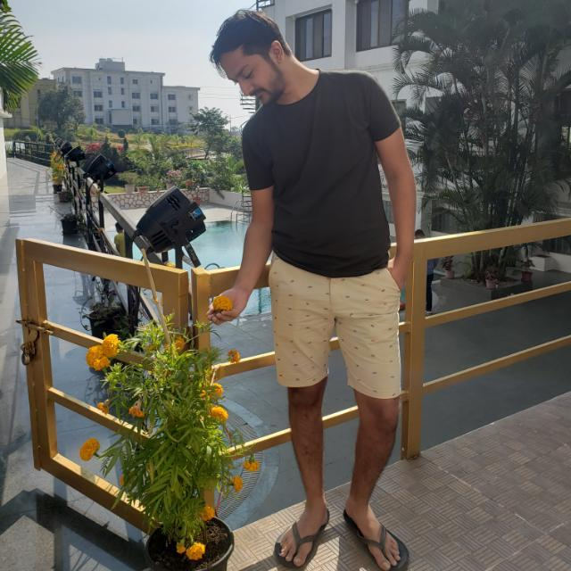

Kaushil Prajapati - Android & Web developer

I am currently pursuing my Mobile Application Design & Development Program at Lambton College, and I have a specialization in Computer Application. Objective: To work as a web or mobile apps developer where I can apply my knowledge and skills to develop organization & personal growth by learning from the organization's experience and working with the organization to achieve its goals. And to learn more on the Self-confidence platform in the future.
Looking forward to new opportunities for me to learn and explore my skills. Passionate about building great applications or products that will improve the lives of people
●Demonstrates dedication to mastering developing software by fundamental knowledge of languages like C/C++, Java, Swift, Python. ●Hones ability to expertly operate various technical programs, including Xcode and Android Studio. ●Can develop web applications in various languages like HTML,CSS,JS,ASP.NET etc. ●Excellent problem-solving, logical thinking, adapting, and decent communication skills in English. ●Available full-time during summers Monday to Friday, i.e., from 8:30 am to 8 pm.
Qualifications
●Passionate and Results-oriented with comprehensive web and mobile applications development experience gained through execution of projects in educational and intern settings.●Demonstrates dedication to mastering developing software by fundamental knowledge of languages like C/C++, Java, Swift, Python. ●Hones ability to expertly operate various technical programs, including Xcode and Android Studio. ●Can develop web applications in various languages like HTML,CSS,JS,ASP.NET etc. ●Excellent problem-solving, logical thinking, adapting, and decent communication skills in English. ●Available full-time during summers Monday to Friday, i.e., from 8:30 am to 8 pm.
Technical Acumen:
- Java,Android
- Asp.net,C#
- C++
- SQL
- JSON
- HTML5,CSS3,JS
- Python
Internship Experience
FullStack Web Developer(December 2020 – May 2021)
Company :- J.C.N Technologies
Internship Experience |
||
|---|---|---|
| Position | Company name | Timeline |
| FullStack Developer | J.C.N Technologies | Dec 2020 – May 2021 |